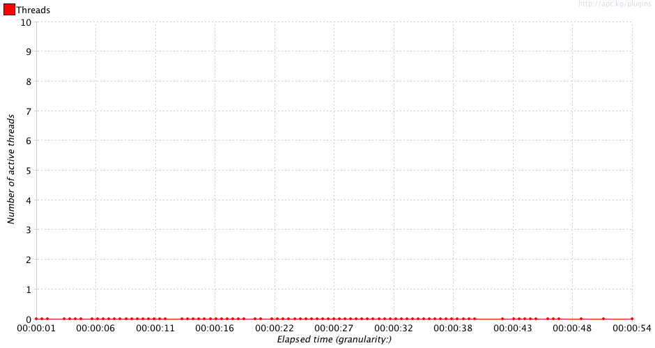
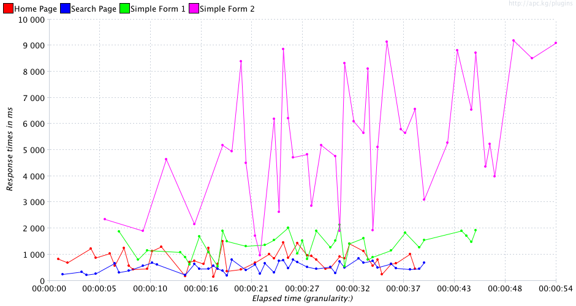
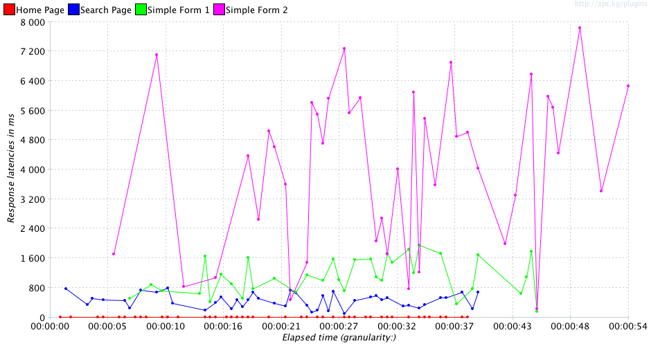
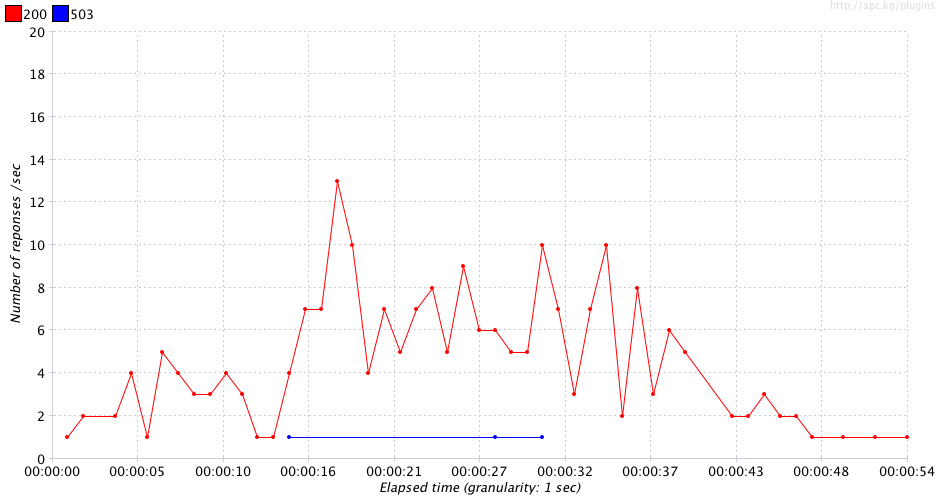
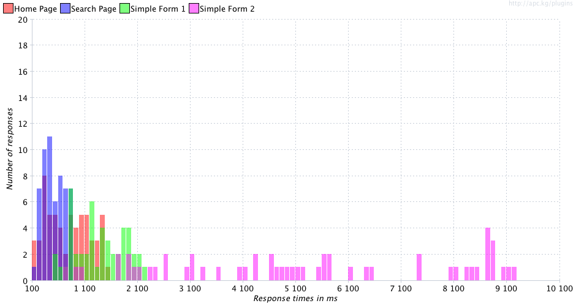
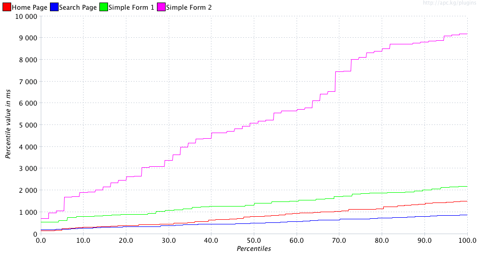

sample_nominal_20130314_152834.jtlResult Table:
| Page | Requests | AVG | Median | Std Deviation | % Deviation | Minimum | 90% | Maximum | Throughput | % error | % < 500ms | % < 2s | % < 4s | % < 6s | % < 8s |
|---|---|---|---|---|---|---|---|---|---|---|---|---|---|---|---|
| Home Page | 61 | 796 | 801 | 400.62 | 26.71 | 141 | 1361 | 1500 | 1.57 | 0.0 | 31.1 | 99.9 | 99.9 | 99.9 | 99.9 |
| Search Page | 57 | 525 | 492 | 199.2 | 22.41 | 192 | 806 | 889 | 1.47 | 0.0 | 50.8 | 99.9 | 99.9 | 99.9 | 99.9 |
| Simple Form 2 | 55 | 5265 | 5097 | 2601.73 | 28.28 | 723 | 8768 | 9200 | 1.09 | 0.0 | 0.00 | 12.70 | 32.70 | 63.60 | 72.70 |
| Simple Form 1 | 48 | 1387 | 1321 | 468.42 | 21.29 | 540 | 1970 | 2200 | 1.2 | 6.25 | 0.00 | 89.50 | 99.9 | 99.9 | 99.9 |
| TOTAL | 221 | 1967 | 978 | 2341.38 | 25.45 | 141 | 5657 | 9200 | 4.09 | 1.36 | 20.47 | 75.50 | 83.10 | 90.83 | 93.10 |






Issues:
| Issue | Label | Item | Expected | Real |
|---|---|---|---|---|
| 1 | Home Page | % Deviation | 25 | 26.71 |
| 2 | Simple Form 2 | Average | 1000 | 5265 |
| 3 | Simple Form 2 | Median | 1000 | 5097 |
| 4 | Simple Form 2 | Std. Deviation | 1000 | 2601.73 |
| 5 | Simple Form 2 | % Deviation | 25 | 28.28 |
| 6 | Simple Form 2 | Min Time | 400 | 723 |
| 7 | Simple Form 2 | 90% Line | 2000 | 8768 |
| 8 | Simple Form 2 | Max Time | 2100 | 9200 |
| 9 | Simple Form 2 | Min Throughtput | 1.3 | 1.09 |
| 10 | Simple Form 2 | Under 0.5s | 30 | 0 |
| 11 | Simple Form 2 | Under 2s | 90 | 12.7 |
| 12 | Simple Form 2 | Under 4s | 95 | 32.7 |
| 13 | Simple Form 2 | Under 6s | 97 | 63.6 |
| 14 | Simple Form 2 | Under 8s | 99 | 72.7 |
| 15 | Simple Form 1 | Number of samplers | 50 | 48 |
| 16 | Simple Form 1 | Average | 1000 | 1387 |
| 17 | Simple Form 1 | Median | 1000 | 1321 |
| 18 | Simple Form 1 | Min Time | 400 | 540 |
| 19 | Simple Form 1 | Max Time | 2100 | 2200 |
| 20 | Simple Form 1 | Min Throughtput | 1.3 | 1.2 |
| 21 | Simple Form 1 | % Error | 1 | 6.25 |
| 22 | Simple Form 1 | Under 0.5s | 30 | 0 |
| 23 | Simple Form 1 | Under 2s | 90 | 89.5 |
| 24 | TOTAL | Average | 1000 | 1967 |
| 25 | TOTAL | Std. Deviation | 1000 | 2341.38 |
| 26 | TOTAL | % Deviation | 25 | 25.45 |
| 27 | TOTAL | 90% Line | 2000 | 5657 |
| 28 | TOTAL | Max Time | 2100 | 9200 |
| 29 | TOTAL | % Error | 1 | 1.36 |
| 30 | TOTAL | Under 0.5s | 30 | 20.474999999999998 |
| 31 | TOTAL | Under 2s | 90 | 75.50000000000001 |
| 32 | TOTAL | Under 4s | 95 | 83.10000000000001 |
| 33 | TOTAL | Under 6s | 97 | 90.82500000000002 |
| 34 | TOTAL | Under 8s | 99 | 93.10000000000001 |